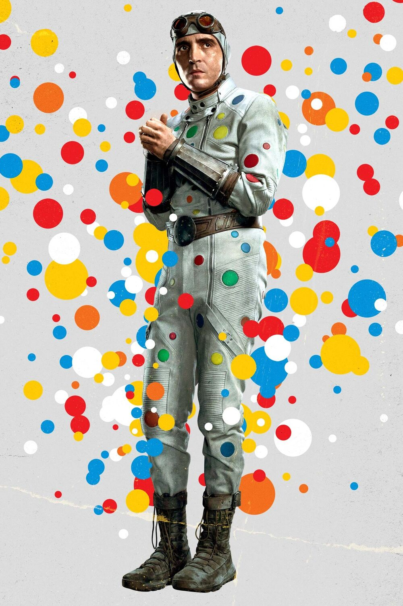

Source : DC Extended Universe Wiki
Polka-Dot Man
Abner Krill, aussi connu sous le pseudo de Polka-Dot Man est un criminel meta-humain de Gotham City qui peut faire grandir des pois multicolores de son corps. Avec l'aide de ses gantelets, Krill est capable de projeter ces points multicolores sur ses ennemis. Chaque couleur représente une arme différente. Polka-Dot Man est très silencieux, il est découragé et ne semble pas très confiant dans ses capacités meta-humaines, souvent nerveux dans la bataille. Il est malheureux et a un désir de mort, voulant mourir dans sa mission de la Force Spéciale X. Il est aussi cynique, prenant le manteau de « la folle » sans problème ni débat.